UniverseTrip Tour: Die Weite des Universums
Diese Tour veranschaulicht die Entfernungen im Universum und zeigt dabei die Positionen und Bilder der eindrucksvollsten Objekte des Nachthimmels.
Die Tour ist in 19 Abschnitte unterteilt. In jedem Abschnitt wird der sichtbare Bereich des Universums um das 10-fache erweitert. Beginnend mit einem Radius von 0,0000001 Lichtjahren (Erde-Mond System) bis zu 10 Milliarden Lichtjahren. Der letzte Abschnitt zeigt mit einem Radius von 50 Milliarden Lichtjahren das gesamte sichtbare Universum.
Radius: 0,0000001 Lichtjahre
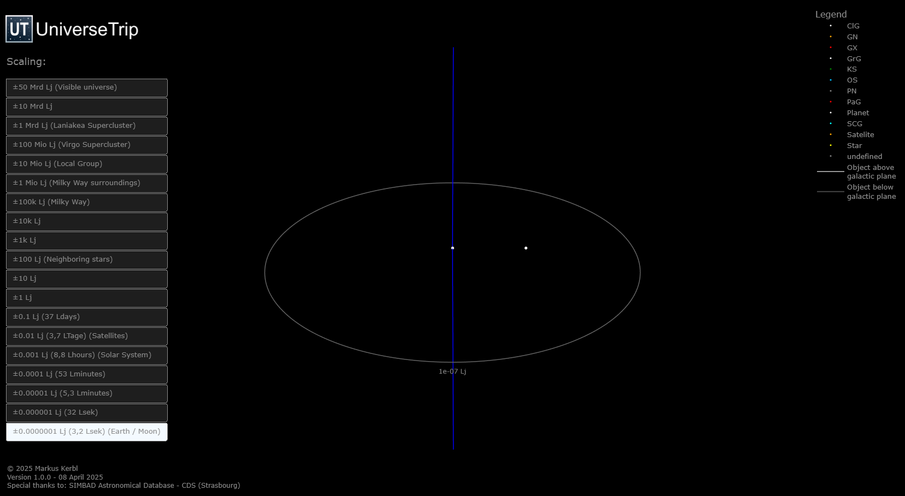
Die Stecke von 0,0000001 Lj legt das Licht in ~3,2 Sekunden zurück.
Das Erde-Mond System ist sichtbar. Der Mond umkreist in einem Abstand von ca. 384.400 km (~1,3 Lichtsekunden) die Erde und ist mit ca. 3.470 km rund 1/4 so groß wie die Erde.
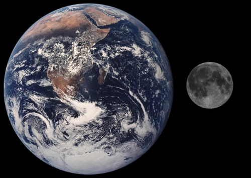
Source: Wikimedia Commons [1]
Die tatsächlichen Größenverhältnisse kann man anhand der folgenden Abbildung besser abschätzen. Sowohl die Durchmesser als auch der Abstand Erde - Mond sind im gleichen Maßstab dargestellt.
Nachfolgende Abbildung zeigt die Orion Kapsel im Rahmen der Artemis 1 Mission mit der aufgehenden Erde über dem Horizont des Mondes.
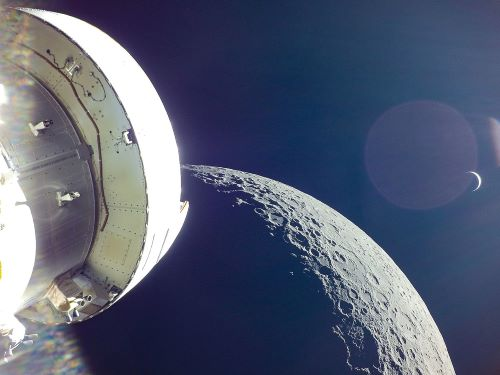
Source: Wikimedia Commons [7]
Radius: 0,000001 Lichtjahre
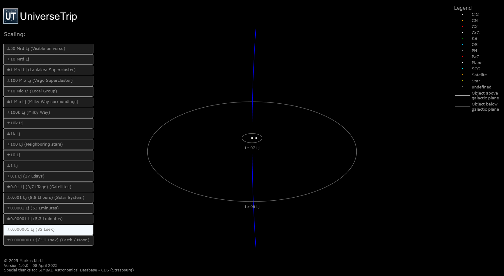
In dieser Darstellung wird nun ein 10-fach größerer Bereich des Universums dargestellt. Den Radius von 0,000001 Lj legt das Licht in ~32 Sekunden zurück.
Das Erde-Mond System ist weiterhin sichtbar. Die blau eingezeichnete Planetenbahn lässt bereits jetzt eine kreisartige Form um die Sonne erahnen. Ansonsten ist der Weltraum in diesem Bereich weitgehend leerer.
Radius: 0,00001 Lichtjahre
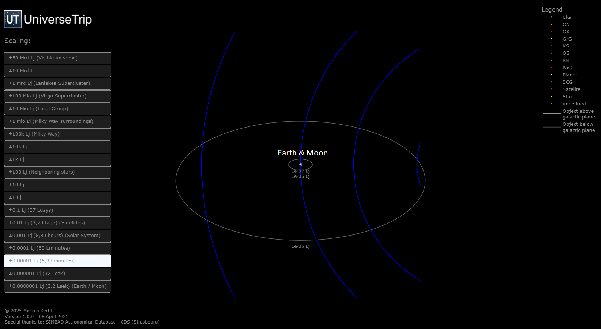
Den Radius von 0,00001 Lj legt das Licht in ~5,3 Minuten zurück.
In diesem dargestelltem Maßstab lassen sich Erde und Mond kaum mehr als einzelne Punkte erkennen. Die Orbits (blaue Linien) der Nachbarplaneten werden allmählich sichtbar. Mars ganz links, Erde, Venus und Merkur ganz rechts.
Radius: 0,0001 Lichtjahre
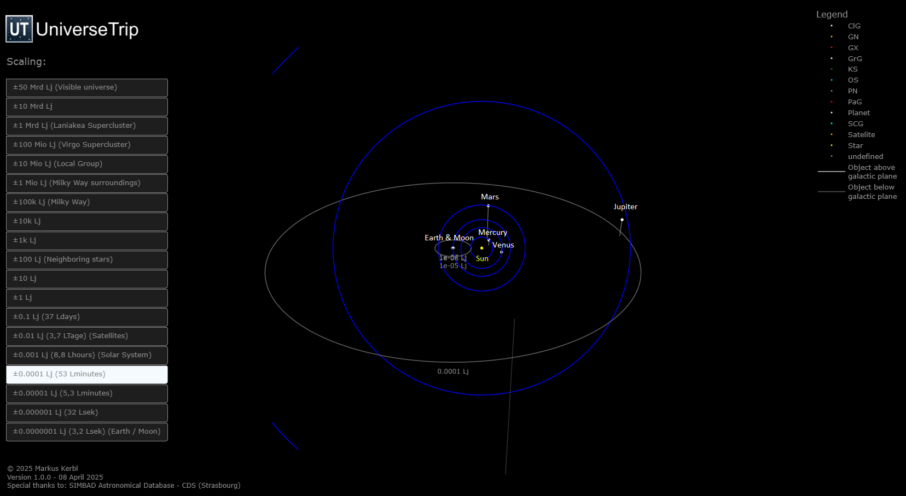
Um den dargestellten Radius von 0,0001 Lj zu durchqueren, benötigt das Licht ~53 Minuten.
Das innere Sonnensystem mit den Gesteinsplaneten Merkur, Venus, Erde und Mars sowie der Sonne im Zentrum unseres Sonnensystems ist sichtbar.
Aufgrund von physikalischen Zusammenhängen in der Entstehung des Sonnensystems aus einer Staub- und Gaswolke (innen heiß, außen kalt) entstanden die Gesteinsplaneten im inneren Sonnensystem relativ nahe zur Sonne, während die Gasriesen Jupiter, Saturn, Uranus und Neptun im äußeren Sonnensystem liegen.
Nachfolgende Abbbildung zeigt die Gesteinsplaneten Merkur, Venus, Erde und Mars im richtigen Größenverhältnis.
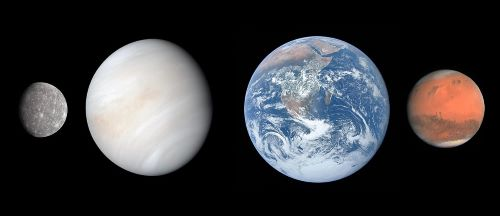
Source: Composition of differnt pictures/Authors (siehe Quellenverzeichnis) - Wikimedia Commons [3]
Radius: 0,001 Lichtjahre
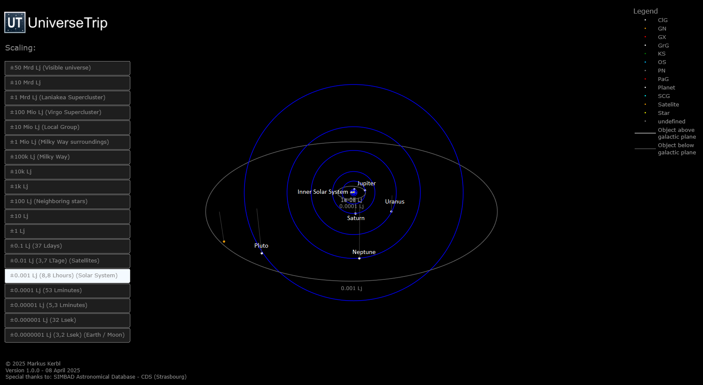
Das Licht benötigt 8,8 Stunden, um den Radius von 0.001 Lj zu durchqueren.
Die inneren Gesteinsplaneten sind jetzt nur mehr als kleine Kreise nahe der Sonne sichtbar. Die Gasriesen Jupiter, Saturn, Uranus und Neptun, der Zwergplanet Pluto sowie deren Kreisbahnen um die Sonne (in blau) sind nun deutlich erkennbar.
Das nachstehende Bild zeigt die Größenverhältnisse aller Planeten im Sonnensystem inklusive der Sonne und Pluto.
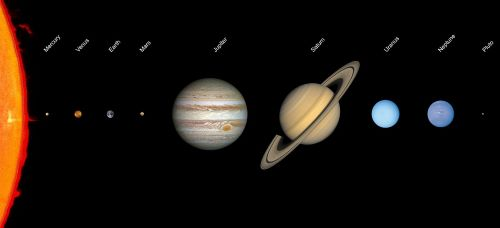
Source: Composition of differnt pictures/Authors (siehe Quellenverzeichnis) - Wikimedia Commons [4]
Am Nachthimmel sind die Planeten Merkur, Venus, Mars, Jupiter und Saturn sowie der Mond mit bloßem Auge sichtbar. Alle anderen Planeten sind nur mit dem Teleskop zu beobachten.
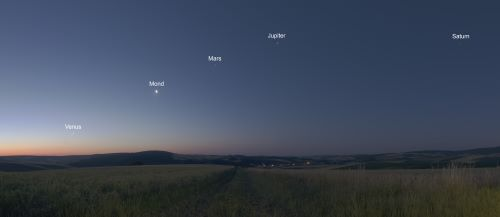
Source: Markus Kerbl - Planet alignment June 2022 [8]
Radius: 0,01 Lichtjahre
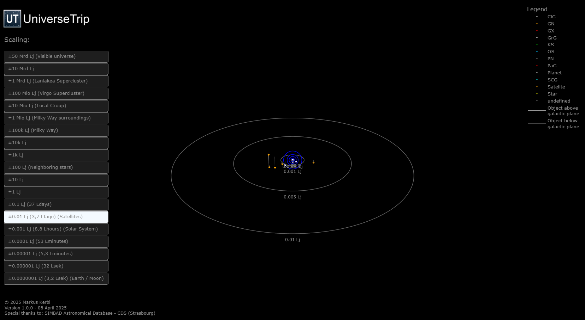
In diesem Maßstab sind die entferntesten, von Menschenhand gemachten Objekte erkennbar. Die Raumsonden Voyager 1 und 2, Pioneer 10 und 11 sowie New Horizons verlassen gerade das Sonnensystem und begeben sich auf eine Reise in den weiten Kosmos, bei der sie wohl niemand stoppen wird.
Voyager 1 ist die am weitest entfernte Raumsonde. Sie wurde 1977 zur Erkundung des äußeren Sonnensystems gestartet und ist seitdem fast 50 Jahre unterwegs. Derzeit ist die Sonde ca. 25 Milliarden Kilometer von der Erde entfernt. Das Licht benötigt für diese Entfernung ca. 23 Stunden um zu uns zu gelangen.
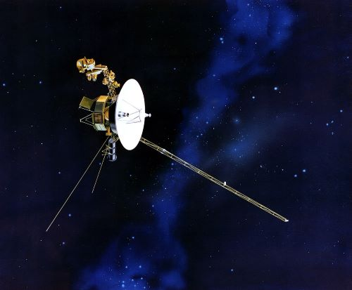
Source: NASA/JPL - Wikimedia Commons [5]
Den beiden Raumsonden Voyager 1 und 2 wurden goldene Schallplatten mit Informationen über die Erde und die Menschheit mitgegeben. Diese Platten enthalten Musik, Bilder und Grüße in verschiedenen Sprachen, um mögliche außerirdische Lebensformen über die Menschheit zu informieren.
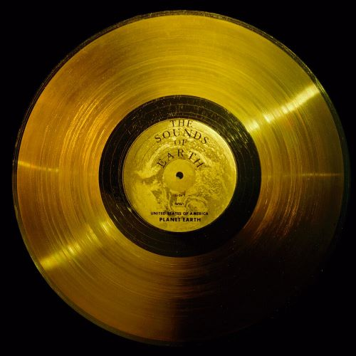
Source: NASA - Wikimedia Commons [6]
Radius: 0,1 Lichtjahre
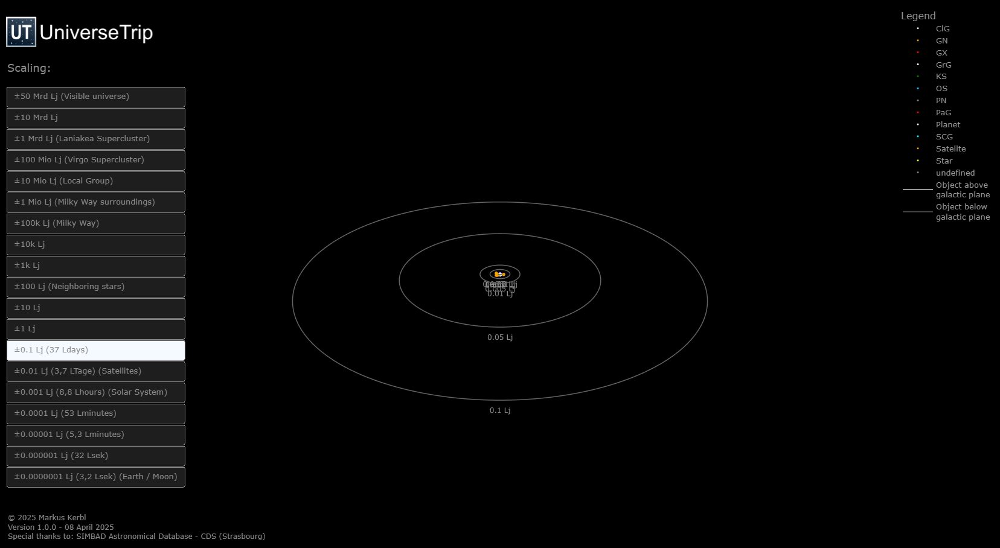
Das Sonnensystem und die Raumsonden sind in diesem Maßstab kaum mehr als einzelne Objekte wahrnehmbar. Ansonsten nahezu leerer Raum.
Radius: 1 Lichtjahr
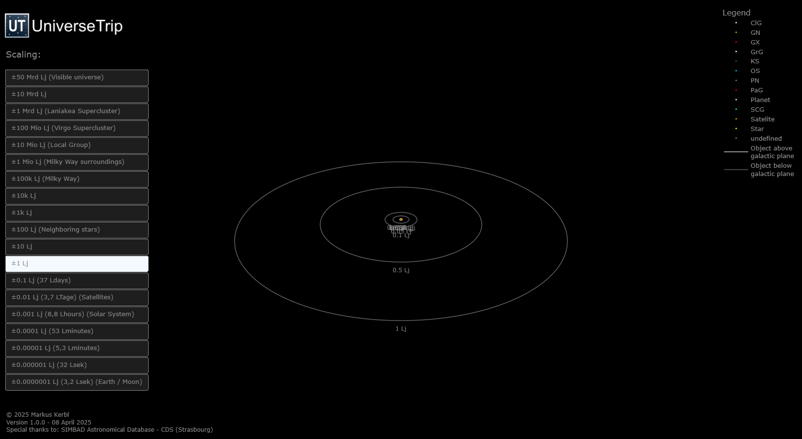
Der Radius der Darstellung beträgt 1 Lichtjahr. Das Licht der Sonne ist bis zum äußersten Entfernungskreis ein Jahr unterwegs. Unser Sonnensystem und die Raumsonden sind nur noch als einzelner Punkt erkennbar.
In diesem Bereich finden wir weitgehend leeren Raum vor.
Radius: 10 Lichtjahre
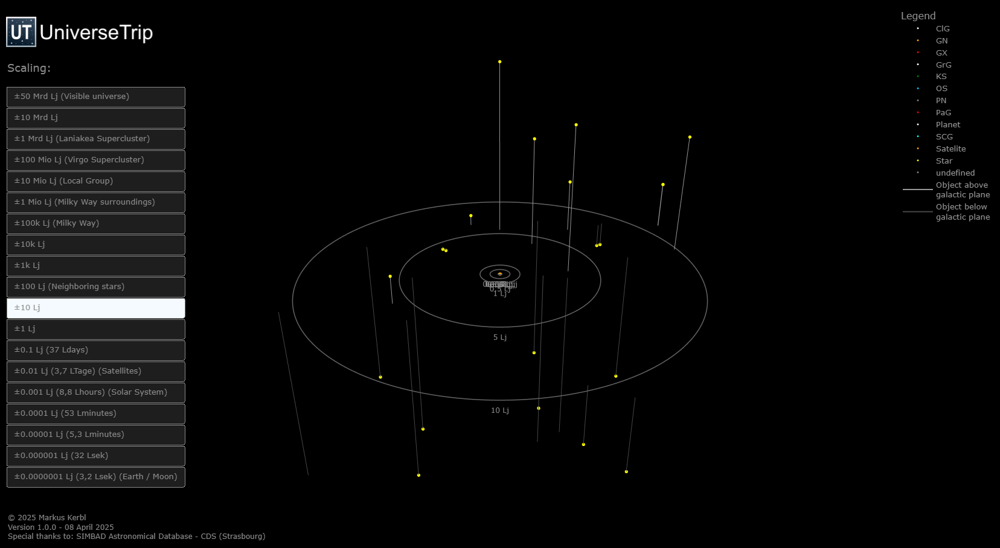
Im Radius von 10 Lichtjahren werden die Nachbarsterne unserer Sonne sichtbar. In dieser Simulation sind die 20 nächsten Sterne dargestellt. Proxima Centauri ist mit 4,2 Lichtjahren Entfernung der nächstgelegene Stern zur Sonne.
Der Stern Sirius ist aufgrund seiner Leuchtkraft und nähe zur Sonne der hellste Stern am gesamten Nachthimmel.
Prokyon im Sternbild kleiner Hund ist ebenfalls relativ hell und daher gut erkennbar.
Viele der weiteren Nachbarsterne sind sehr lichtarm und daher keine auffälligen Sterne am Nachthimmel.
Nachfolgende Nighscape Aufnahme zeigt die beiden Sterne Sirius im Sternbild Großer Hund (Canis Major) sowie Prokyon im Kleinen Hund (Canis Minor).
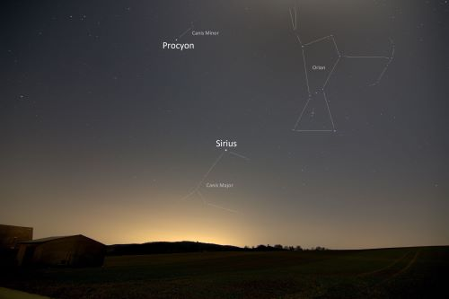
Source: Markus Kerbl - Orion, Canis Major and Canis Minor [9]
Erwähnenswert ist auch Barnards Pfeilstern, der sich so schnell an der Sonne vorbei bewegt, dass wir seine Wanderung über die Jahre gegenüber den Sternen im Hintergrund verfolgen können.
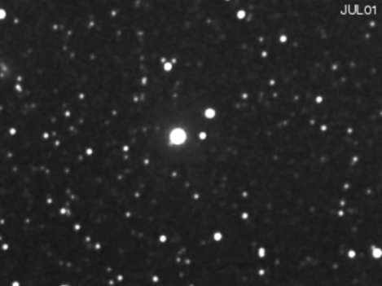
Source: Alejandro Sanz Gómez - Wiki Commons [10]
Radius: 100 Lichtjahre
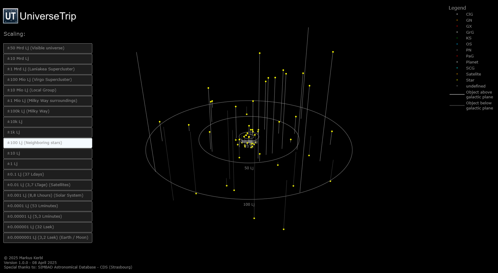
Während die 20 Nachbarsterne der Sonne in der Mitte der Simulation noch erkennbar sind, sind in diesem Maßstab ein Teil der 100 hellsten Sterne am Nachthimmel sichtbar. Ein paar der bekannstesten sind Kapella (Sternbild Fuhrmann), Aldebaran (Sternbild Stier), Regulus (Sternbild Löwe) oder Pollux (Sternbild Zwillinge).
Radius: 1.000 Lichtjahre
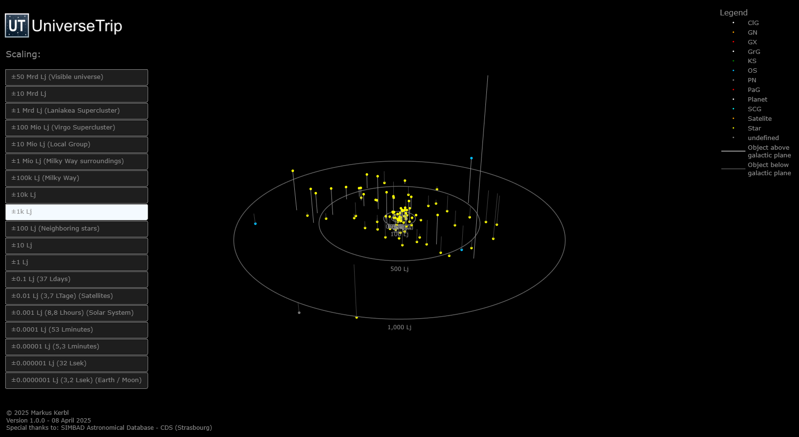
Die 100 hellsten Sterne unseres Nachthimmels sind jetzt abgebildet. Sie sind als helle, auffallende Sterne am Nachthimmel sichtbar.
Polaris (unser derzeitige Nordstern) hat eine besondere Rolle, da er fast genau in der Erdachse steht und damit die Nordrichtung und die geografische Breite einfach zu bestimmen sind. Er diente seit jahrhunderten den Seefahrern zur Navigation.
Nachstehende Abbildung zeigt den Lauf der Sterne über mehrere Stunden. Polaris steht aufgrund seiner Position nahe der Erdachse fast still, während sich die anderen Sterne scheinbar um ihn herum bewegen.
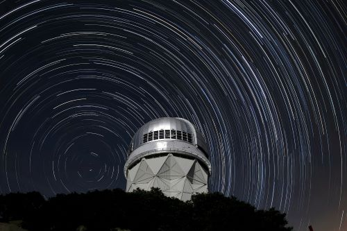
Source: KPNO/NOIRLab/NSF/AURA/P. Marenfeld - Wiki Commons [29]
Zusätzlich zu den Sternen gibt es auch unzählige weitere Objekte am Nachthimmel zu sehen. Große galaktische Nebel, planetarische Nebel, Kugelsternhaufen, offene Sternhaufen oder auch andere Galaxien abseits unserer Heimatgalaxie der Milchstraße. In der dargestellten Simulation sind bereits die ersten Objekte dieser Art sichtbar. Das Objekt Messier 45 (die Plejaden) ist ein gut sichtbarer offener Sternhaufen im Sternbild Stier.
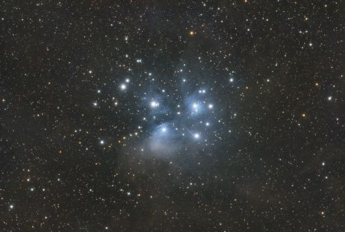
Source: Markus Kerbl - M45 Pleiades [11]
Radius: 10.000 Lichtjahre
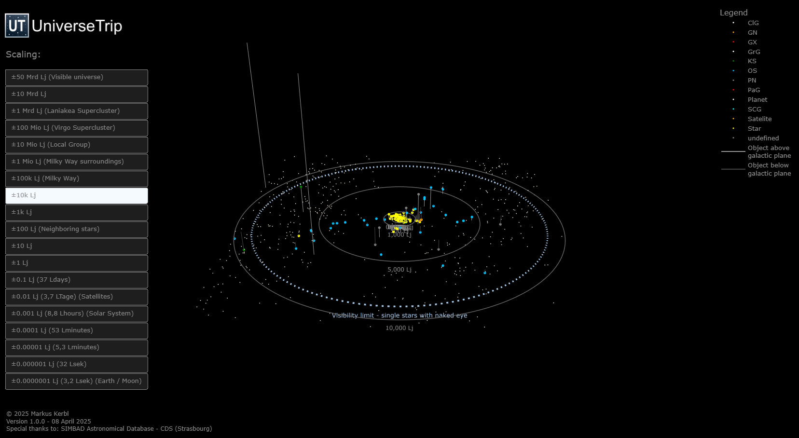
Im Radius von ca. 10.000 Lj befinden sich alle Sterne, die wir mit freiem Auge als einzelne Sterne auflösen können. Alle weiteren Sterne erscheinen uns als nebelförmiges Band, das sich in dunken Nächten vom restlichen Nachthimmel abhebt - das Milchstrßenband.
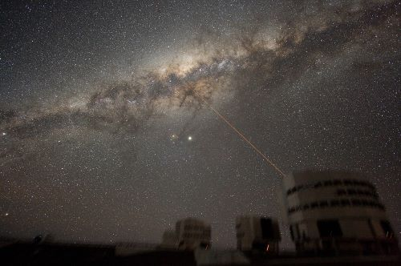
Source: Von ESO/Y. Beletsky - Wiki Commons [14]
Weitere interessante Objekte sind der Orionnebel (Messier 42) und UY Scuti, einer der größten bekannten Sterne. Folgende Abbildungen zeigen den Orionnebel und einen Größenvergleich zwischen unserer Sonne und UY Scuti.
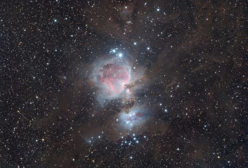
Source: Markus Kerbl - M42 (Orion Nebula) [12]
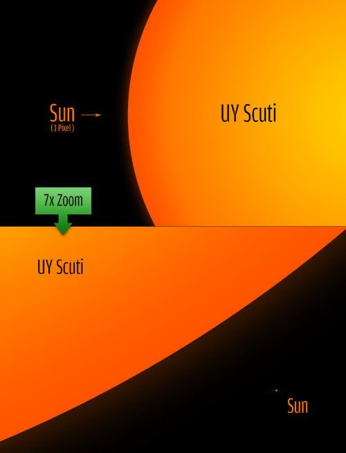
Source: Philip Park - Wiki Commons [13]
Radius: 100.000 Lichtjahre
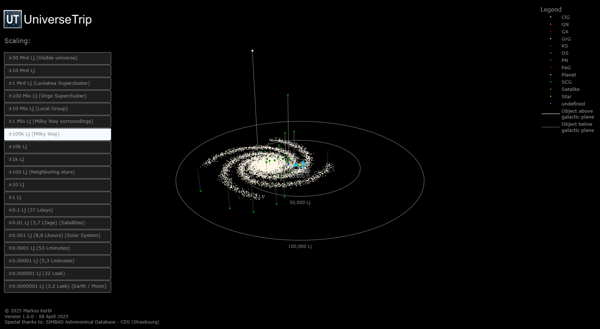
In diesem Maßstab sehen wir unsere gesamte Galaxie, die Milchstraße, mit einen Durchmesser von ca. 105.000 Lj. Im Halo der Milchstrasse sammeln sich die Kugelsternhaufen (als grüne Punkte dargestellt). Einer der bekanntesten steht im Sternbild Herkules und trägt die Bezeichnugn Messier 13.
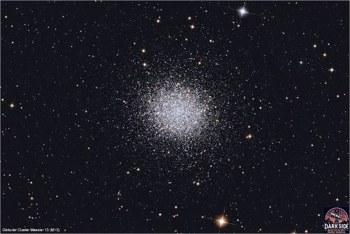
Source: Thedarksideobservatory - Wiki Commons [15]
Die Milchstraße besteht aus ca. 100 - 400 Milliarden Sternen. Mit Ausnahme der Andromeda- und Dreiecksgalaxie (M31 und M33) befindet sich alles, was wir am Nachthimmel mit freiem Auge sehen können, innerhalb der Milchstraße.
Radius: 1.000.000 Lichtjahre
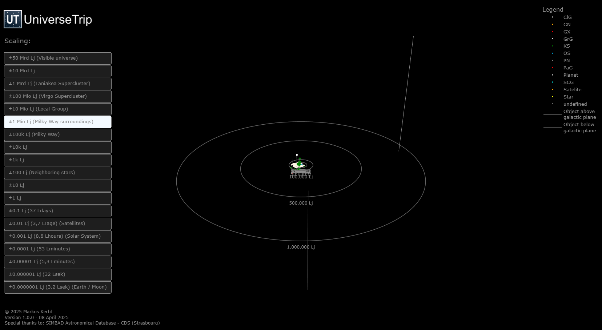
Die Begleitgalaxien unserer Milchstraße sind zu erkennen. Erwähnenswert sind die bereits mit freiem Auge sichtbaren Große- und Kleine Magellansche Wolke.
Das nachfolgende Bild zeigt am linken Rand die Magelanschen Wolken als nebelige Flecken abseits der Milchstraße.
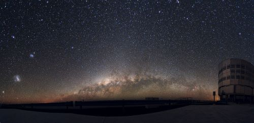
Source: ESO/Y. Beletsky - Wiki Commons [16]
Radius: 10.000.000 Lichtjahre
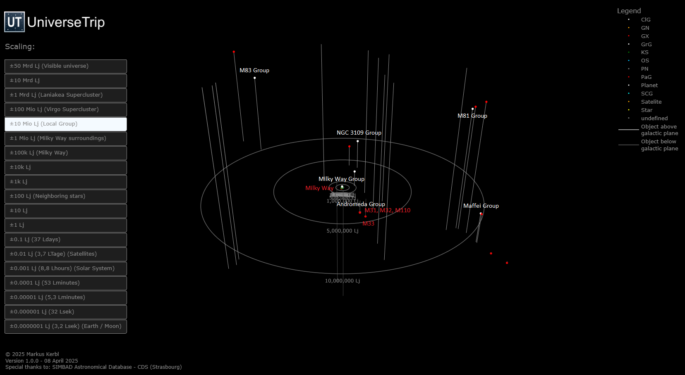
Unsere Lokale Gruppe ist zu sehen. Die Lokale Gruppe ist eine Galaxiengruppe und besteht aus ca. 100 Galaxien. Aus Übersichtsgründen sind hier nicht alle dargestellt.
Die Lokale Gruppe besteht aus der Milchstraßen Gruppe, der Andromeda Gruppe, NGC 3109 Gruppe sowie einigen Galaxien, die keiner dieser Untergruppen angehören.
Die einflussreichsten Galaxien der Lokalen Gruppe sind die Milchstraße sowie die Andromeda Galaxie (M31) gemeinsam mit M32 und M110 und der Dreiecksnebel M33.
M31 und M33 sind ca. 2,6 Millionen Lj von der Erde entfernt. Das Licht, das wir heute mit freiem Auge von diesem Objekt sehen können, wurde bereits ausgesendet, als die Mammuts die Erde bevölkerten und sich die ersten Menschen entwickelt haben.
Die dargestellten weiteren Galaxiengruppen (M83 Gruppe, M81 Gruppe, Maffei Gruppe) sind nicht mehr Teil der Lokalen Gruppe und gehören bereits zum übergeordneten Virgo-Superhaufen.
Die nachfolgende Abbildung zeigt die Andromada Galaxie am Nachthimmel. Sie ist mit bloßem Auge als nebliger Fleck sichtbar.
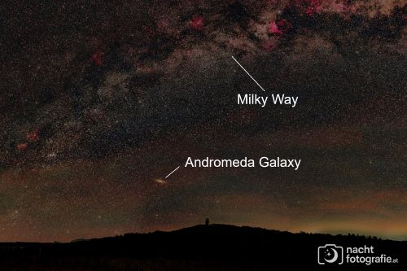
Source: Walter Rekirsch - nachtfotografie.at (modified by Markus Kerbl) [28]
Nachfolgende Abbildung zeigt die Andromeda Galaxie (M31) gemeinsam mit M32 und M110. Im zweiten Bild ist die Dreiecksgalaxie (M33) zu sehen.
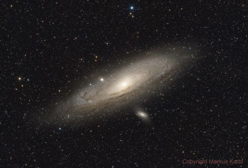
Source: Markus Kerbl - M31 (Andromeda) [17]
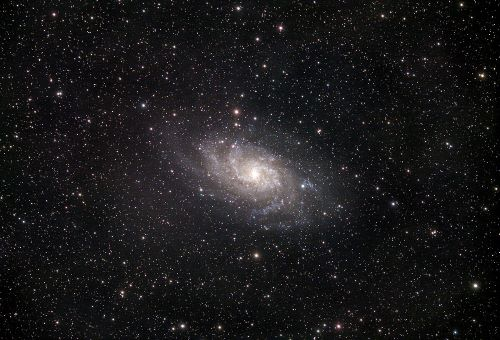
Source: Stephen Rahn from Macon - Wiki Commons [18]
Radius: 100.000.000 Lichtjahre
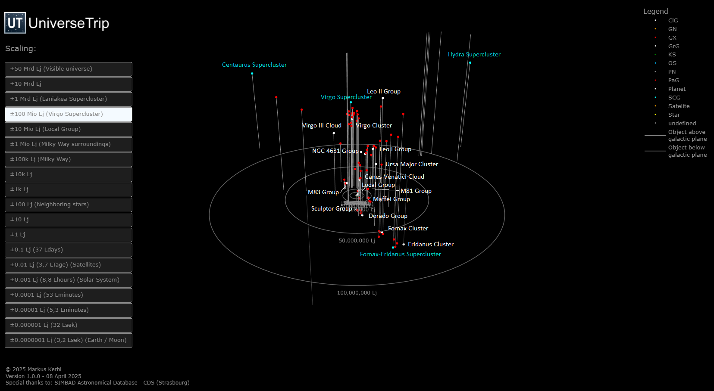
Im Radius von 100 Mio. Lichtjahren beginnt der Bereich von Galaxienhaufen und Galaxien-Superhaufen. In der Simulation ist der Virgo-Superhaufen zu sehen. Er besteht aus ca. 100 - 200 Galaxienhaufen, die wiederum aus unzähligen Galaxien bestehen.
Die Lokale Gruppe, einlschließlicher unserer Michstraße, besteht aus ca. 80 Galaxien und ist im Zentrum der Simulation erkennbar.
Der größte Galaxienhaufen im Virgo-Superhaufens ist der Virgo-Galaxienhaufen mit ca. 2000 Galaxien. [19]
Nachfolgende Abbildung zeigt den Virgo-Galaxienhaufen.
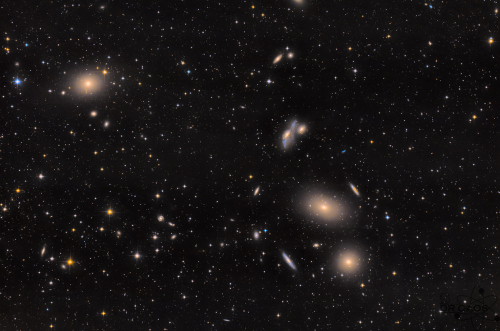
Source: Fernando Pena - Wiki Commons [20]
Radius: 1.000.000.000 Lichtjahre
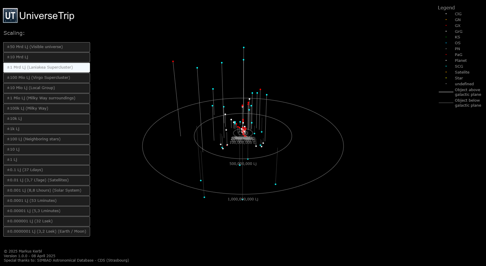
Der Virgo-Superhaufen ist nur einer unter unzähligen Superhaufen im gesamten Universum. Der Virgo-Superhaufen ist gravitativ an weitere Superhaufen in seiner Umgebung gebunden. Einige der nächsten Superhaufen sind der Hydra-Centaurus-Superhaufen und der Pavo-Indus-Superhaufen. Zusammen bilden sie Laniakea, welcher in Summe aus ca. 100.000 Galaxien besteht. Alle Galaxien von Laniakea scheinen auf einen gemeinsamen Anziehungspunkt zuzufliegen, der Great Attractor genannt wird und sich in der Nähe des Norma Haufens befindet. [21]
Das nachfolgende Bild zeigt die Bewegungsrichtung der Galaxien in Laniakea. Der rote Punkt markiert die Milchstraße. Alle Galaxien bewegen sich in Richtung des Great Attractors.
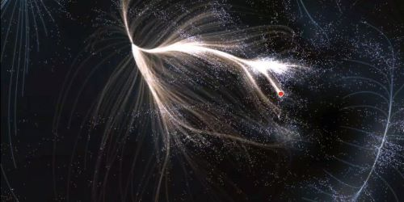
Source: Ivanov - Wiki Commons [22]
Weitere Nachbarn von Laniakea sind unter andrem der Herkules Superhaufen, Coma Superhaufen und der Perseus–Pisces Superhaufen.
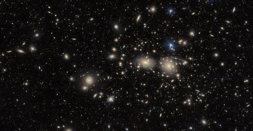
Source: CTIO/NOIRLab/DOE/NSF/AURA Image Processing: D. de Martin & M. Zamani - Wiki Commons [23]
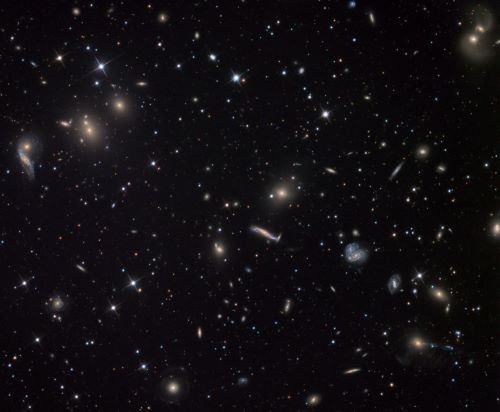
Source: Ngc1535 - Wiki Commons [24]
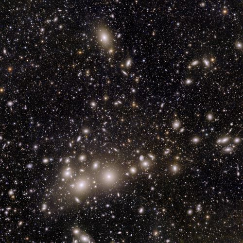
Source: ESA/Euclid/Euclid Consortium/NASA - Wiki Commons [25]
Mit ca. 1 Milliarde Lichtjahren Entfernung ist IC1101 eines der am weitest entfernten Objekte, dass von Amateurastronomen abgebildet wurde. IC1101 ist derzeit eine der größten bekannten Galaxien im Universum. Nachfolgende Abbildung zeigt einen Größenvergleich mit unserer Milchstraße (Via Láctea - ganz links).
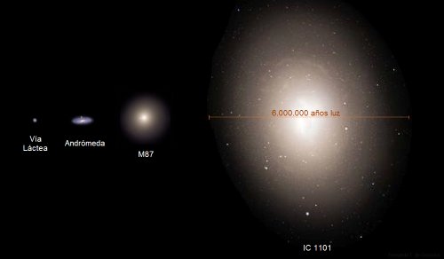
Source: Fernando de Gorocica - Wiki Commons [26]
Radius: 10.000.000.000 Lichtjahre
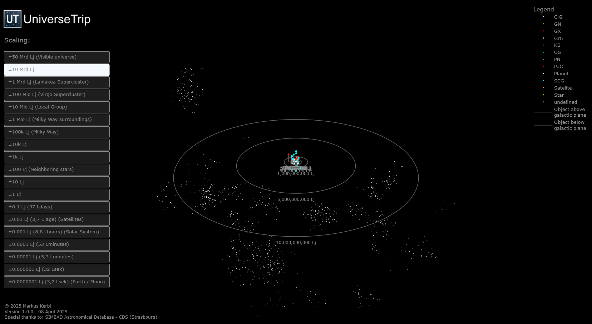
Laniakea und seine benachbarten Superhaufen befinden sich in der Mitte der Simulation. In diesen Skalen wird die kosmische Struktur erkennbar, die hier nur schemenhaft dargestellt ist. Die kosmische Struktur wird durch die Millenium Simulation sichtbar, die in der nachfolgenden Abbildung zu sehen ist.
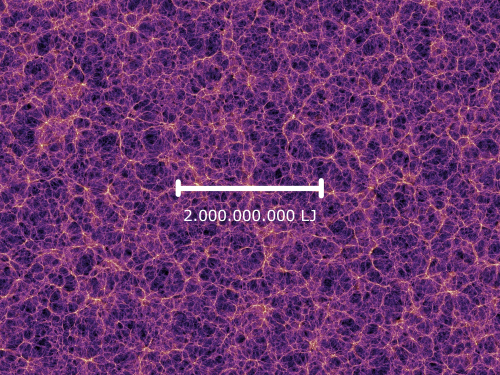
Source: Millenium Simulation, Modified by Markus Kerbl [27]
Radius: 50.000.000.000 Lichtjahre
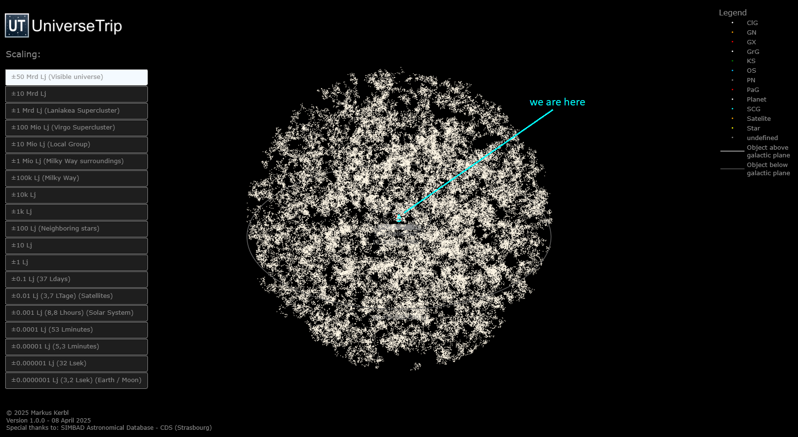
Das gesamte sichtbare Universum hat einen Durchmesser von ca. 93 Milliarden Lichtjahre. Die kaum mehr sichtbaren Superhaufen in der Mitte der Simulation befinden sich auf einem Durchmesser von ca. 2 Milliarden Lichtjahren. Die folgende Abbildung zeigt schemenhaft, wie groß das sichtbare Universum im Vergleich mit unsere Kosmischen Heimat ist.
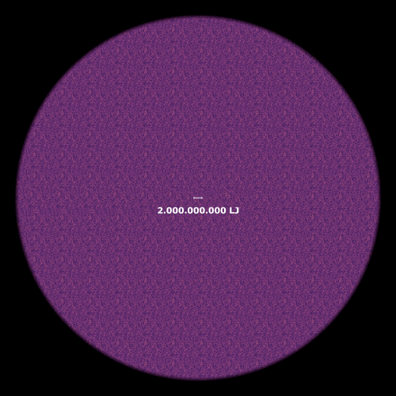
Source: Millenium Simulation, Modified by Markus Kerbl [27]
Quellen
[1] Public Domain, https://commons.wikimedia.org/w/index.php?curid=264039
[2] CC BY 2.5, https://commons.wikimedia.org/w/index.php?curid=1109958
[3] By Mercury image: NASA/JHUAPLVenus image: NASA/Johns Hopkins University Applied Physics Laboratory/Carnegie Institution of Washington Earth image: NASA/Apollo 17 crew, retouch by User:Aaron1a12Mars image: ESA/MPS/UPD/LAM/IAA/RSSD/INTA/UPM/DASP/IDA - Mercury Globe-MESSENGER mosaic centered at 0degN-0degE.jpg Venus 2 Approach Image.jpgThe Blue Marble (remastered).jpgOSIRIS Mars true color.jpg, Public Domain, https://commons.wikimedia.org/w/index.php?curid=92818238
[4] By File:Solar system scale 2 wide.jpg: * File:Solar system scale.jpg: Lunar and Planetary LaboratoryFile:Jupiter and its shrunken Great Red Spot.jpg: NASA, ESA, and A. Simon (Goddard Space Flight Center)derivative work: Martin KraftFile:Sun in February (transparent).png: HalloweenNightderivative work: JCPagc2015 - This file was derived from:Solar system scale 2 wide.jpg:Sun in February (transparent).png:, Public Domain, https://commons.wikimedia.org/w/index.php?curid=71869737
[5] By NASA/JPL - http://solarsystem.nasa.gov/multimedia/display.cfm?IM_ID=2194 (file), Public Domain, https://commons.wikimedia.org/w/index.php?curid=126674
[6] By NASA - Great Images in NASA Description, Public Domain, https://commons.wikimedia.org/w/index.php?curid=6455682
[7] By NASA Johnson - https://www.flickr.com/photos/nasa2explore/52547389828/in/album-72177720303788800/, Public Domain, https://commons.wikimedia.org/w/index.php?curid=126510287
[8] By Markus Kerbl - https://www.astrobin.com/7vt9xw/
[9] By Markus Kerbl - https://www.astrobin.com/5trv3m/
[10] By Alejandro Sanz Gómez - http://www.astrosurf.com/asanz/EBAR.htm, CC BY-SA 2.5 es, https://commons.wikimedia.org/w/index.php?curid=10732343
[11] By Markus Kerbl - https://www.astrobin.com/jdx1xp/
[12] By Markus Kerbl - https://www.astrobin.com/xs7g3z/
[13] By Philip Park - Own work, CC BY-SA 3.0, https://commons.wikimedia.org/w/index.php?curid=31016689
[14] Von ESO/Y. Beletsky - https://web.archive.org/web/20081121184421/http://www.eso.org/gallery/v/ESOPIA/Paranal/phot-33a-07.tif.html, CC BY 4.0, https://commons.wikimedia.org/w/index.php?curid=7398904
[15] By Thedarksideobservatory - Own work, CC BY-SA 4.0, https://commons.wikimedia.org/w/index.php?curid=148437978
[16] By ESO/Y. Beletsky - http://www.eso.org/public/images/potw1114a/, CC BY 4.0, https://commons.wikimedia.org/w/index.php?curid=14788791
[17] By Markus Kerbl - https://www.astrobin.com/f20mef/
[18] By Stephen Rahn from Macon, GA, USA - The Triangulum Galaxy, CC0, https://commons.wikimedia.org/w/index.php?curid=95998722
[19] Wikipedia: Virgo-Superhaufen - https://de.wikipedia.org/wiki/Virgo-Superhaufen
[20] By Fernando Pena - https://www.flickr.com/photos/drcaosastrophoto/49804340298/, CC BY 2.0, https://commons.wikimedia.org/w/index.php?curid=129107601
[21] Wikipedia: Laniakea - https://en.wikipedia.org/wiki/Laniakea_Supercluster
[22] By Ivanov - https://spacegid.com/superklaster-laniakeya.html, CC BY-SA 4.0, https://commons.wikimedia.org/w/index.php?curid=80352037
[23] By CTIO/NOIRLab/DOE/NSF/AURA Image Processing: D. de Martin & M. Zamani (NSF NOIRLab) - Coma Cluster (uncropped view), CC BY 4.0, https://commons.wikimedia.org/w/index.php?curid=151491213
[24] By Ngc1535 - Own work, CC BY-SA 4.0, https://commons.wikimedia.org/w/index.php?curid=45660917
[25] By ESA/Euclid/Euclid Consortium/NASA, image processing by J.-C. Cuillandre (CEA Paris-Saclay), G. Anselmi, CC BY-SA IGO 3.0, CC BY-SA 3.0 igo, https://commons.wikimedia.org/w/index.php?curid=140335076
[26] By Fernando de Gorocica - Own work, CC BY-SA 4.0, https://commons.wikimedia.org/w/index.php?curid=37345029
[27] Millenium Simulation; (modified by Markus Kerbl), Volker Springel, Simon D. M. White, Adrian Jenkins, Carlos S. Frenk, Naoki Yoshida, Liang Gao, Julio Navarro, Robert Thacker, Darren Croton, John Helly, John A. Peacock, Shaun Cole, Peter Thomas, Hugh Couchman, August Evrard, Joerg Colberg & Frazer Pearce; 02.06.2005 in Nature; Abgerufen am 24.03.2025 auf https://wwwmpa.mpa-garching.mpg.de/galform/presse/
[28] By Walter Rekirsch - nachtfotografie.at
[29] By KPNO/NOIRLab/NSF/AURA/P. Marenfeld - Star trails over the Nicholas U. Mayall 4-meter Telescope, CC BY 4.0, https://commons.wikimedia.org/w/index.php?curid=134306801